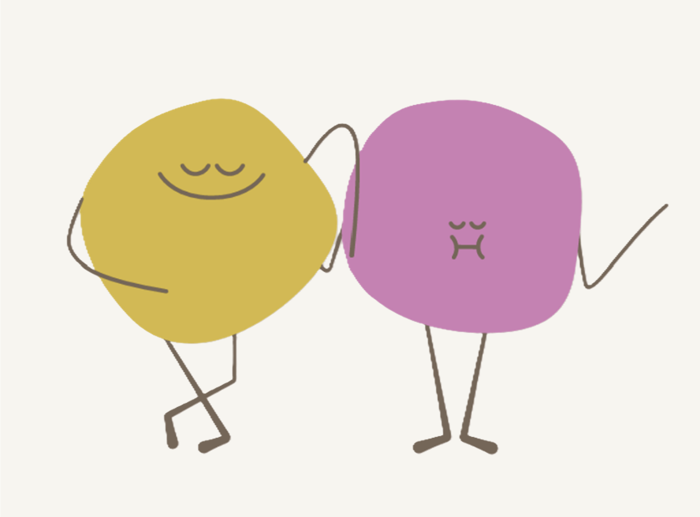
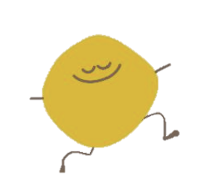
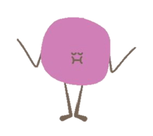

FlowUp 🍃
A physiological sensing smart garment designed to support stress reduction among university students through real-time breathing and muscle-activity feedback.

Explore the FlowUp Development Process
FlowUp was developed through user research, textile-based sensor design, hardware integration, software development, and prototype testing. The project was done for Aalto University's course ELEC-E7845 Smart Wearables II in autumn 2025. The machine learning model and the code for the data collection and user interface can be accessed here.
Overview
Learn about the project background, concept, and goal of supporting stress reduction through wearable biofeedback.
User Research
See how survey insights shaped the design direction and user needs behind the FlowUp system.
Sensor Design
Explore the textile-based respiration, sEMG, and GSR sensors used to detect physiological signals.
Hardware
View the circuit design, e-textile integration, mainboard connection, and modular wearable prototype.
Software
Learn how Arduino, Processing, signal filtering, and machine learning support real-time interaction.
Testing
See prototype testing, user feedback, demo interaction, challenges, and future development.
Meet the FlowUp Characters
The FlowUp interaction uses playful characters to make breathing practice and muscle-activation training feel more engaging and approachable.

Breath Playground
This calm character responds to the user’s breathing. Inhaling moves it upward, while exhaling moves it downward in the game.

Move & Stretch
This active character represents the muscle-activation interaction. When the user activates their arm muscles, sEMG signals trigger game actions and the character disappears.